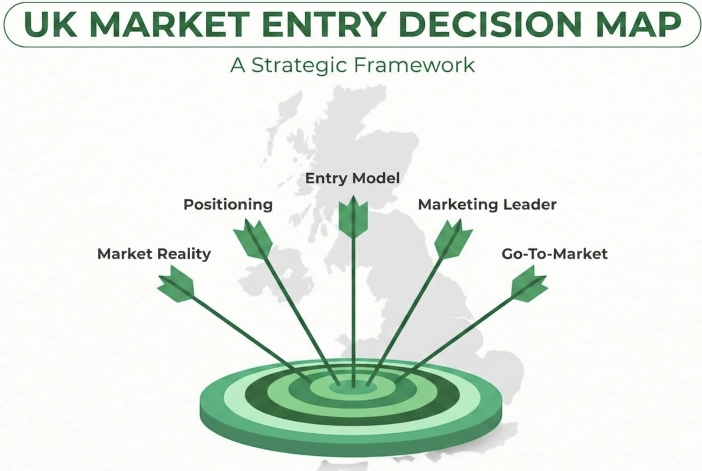

Strategic Marketing Mix: UK Market Entry Analysis
To successfully enter the United Kingdom’s technology sector, VireoLogic AI must adapt its strategy to the British market.

To successfully penetrate the United Kingdom’s technology sector, VireoLogic AI must align its value proposition with the specific demands of the British market, focusing on scalability, regulatory compliance, and service-oriented delivery.
1. Product - The Service Proposition
- Core Offering: transition from pure Edge AI hardware to a robust CaaS model.
- UK Localization: compliance with UK GDPR and alignment with the UK AI regulatory framework.
- Differentiation: emphasize plug-and-play reliability and low-latency processing.
2. Price - Pricing Strategy
- Value-Based Pricing: move away from cost-plus models.
- Tiered Subscription Model: tailored to the UK preference for OPEX over CAPEX.
- Competitive Positioning: introduce introductory proof-of-concept credits.
3. Place - Distribution Channels
- Direct: targeted account management for enterprise clients.
- Indirect: partner with UK-based IT managed service providers.
- Logistics: local cloud-node partnerships to ensure data residency.
4. Promotion - Market Communication
- Thought Leadership: presence at key industry events such as London Tech Week.
- Digital Authority: LinkedIn B2B campaigns for CTOs and Operations Directors.
- Sales Enablement: case studies and white papers with ROI in GBP.